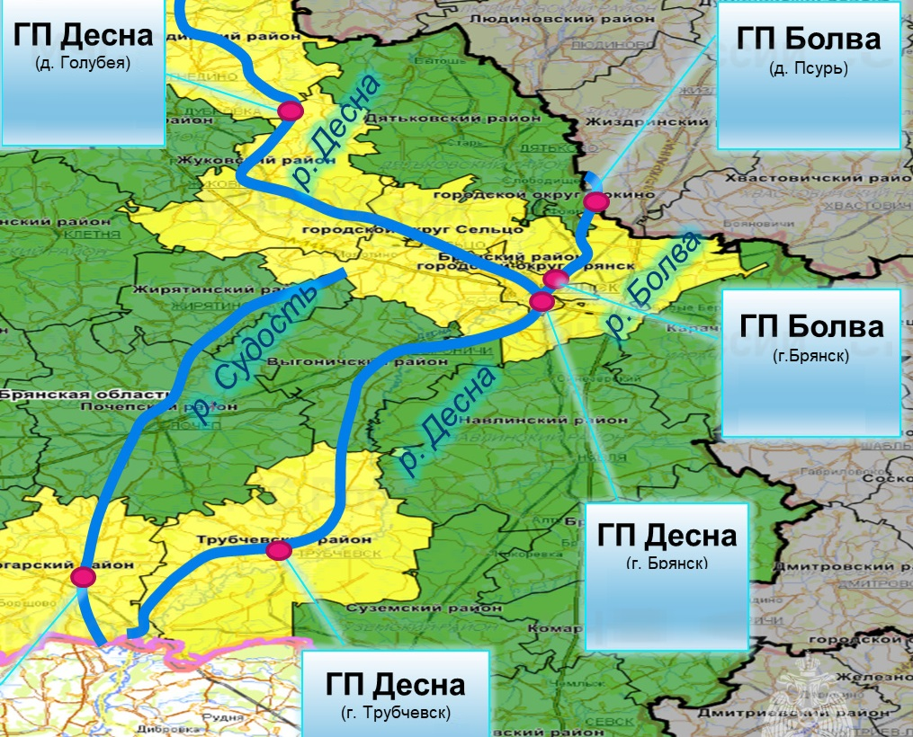

| Дата | Псурь (см) | Болва-Брянск (см) | Десна-Голубея (см) | Десна-Брянск (см) | Десна-Трубчевск (см) | Статус Радицы |
|---|
| Год | Псурь | Болва (Брянск) | Десна (Голубея) | Десна (Брянск) | Десна (Трубчевск) | Радица |
|---|---|---|---|---|---|---|
| 2013 | 418 | 759 | 414 | 535 | 418 | 🔴 Рекордное затопление |
| 2022 | ~360 | 716 | 331 | 529 | 373 | 🔴 Сильное затопление |
| 2026 | 203 | 497 | 351 | 323 | 308 | 🟢 Безопасно |